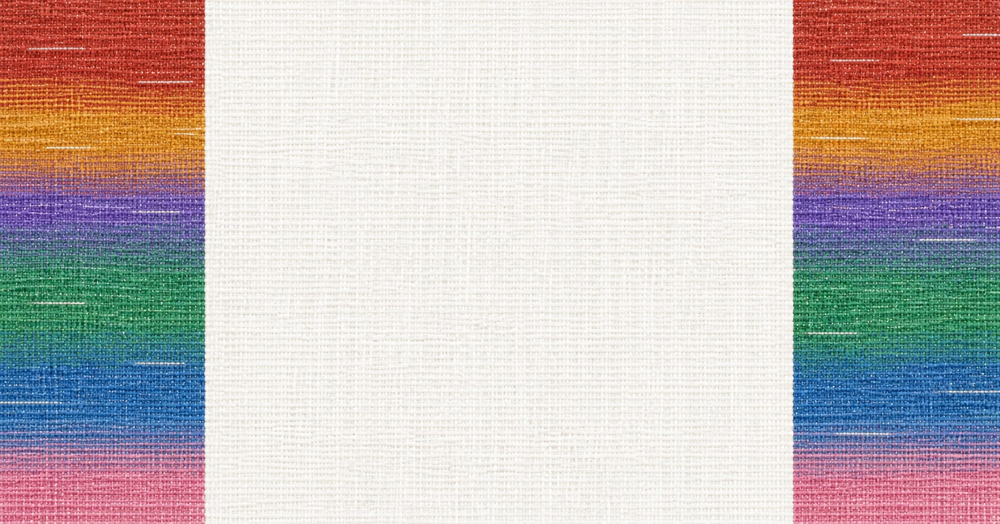
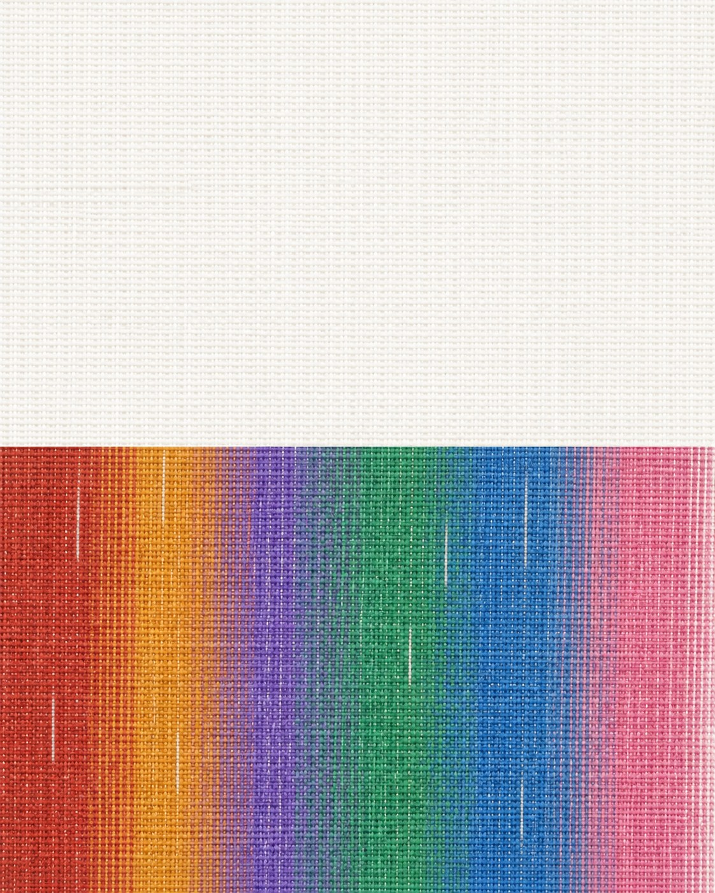
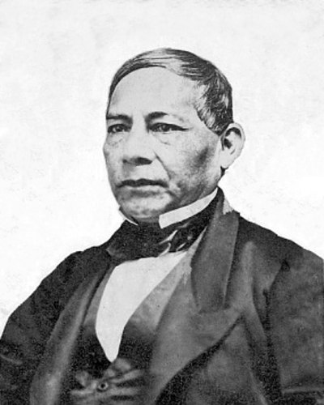
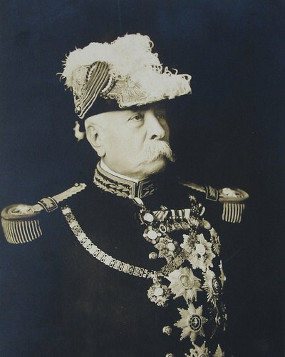
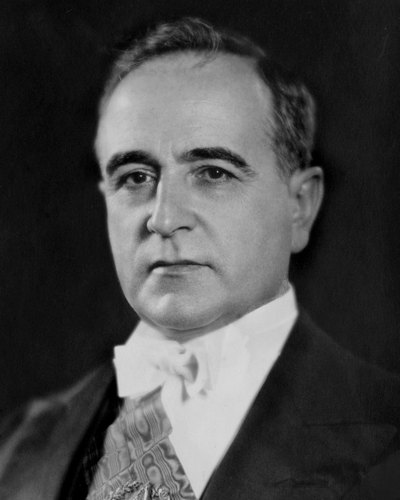
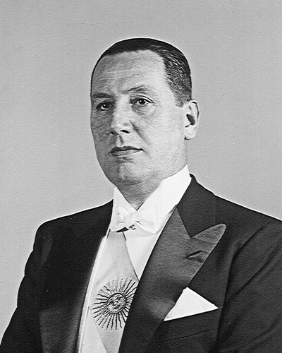
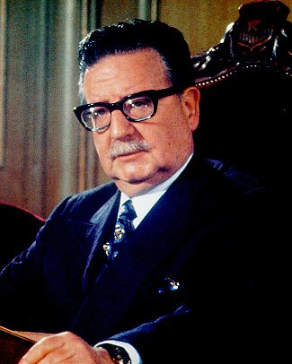

Images from Codex, November 10
Codex made these from the prompts on the canvas, with one change: real presidents now appear. Every face belongs to a president whose messages are in the collection, and Codex drew each face from the reference photo at the bottom of this board. All of them are AI-generated illustrations, not photographs.
Your two presidents banners, corrected
Codex kept your style and the order of the figures. It removed both maps, because the site will draw an accurate one.


Five presidents, two centuries
Each president speaks with the technology of the period. Juárez reads from paper in the 1860s, Perón speaks into a radio microphone in the 1950s, Allende faces television microphones in 1971, and Uribe and Bachelet speak at modern podiums. The top 40 percent stays empty for a headline.


Your archive banner, edited
The play button, sound wave, timeline, bar chart and map are gone. The text lines are plain gray bars, and the right 40 percent is empty for a headline.


Without people




Reference photos given to Codex
Photos from Wikimedia Commons. Counts and years are the messages of each president in the November 8 catalogue.





A credit line for any page that shows these images could read: Illustration generated with AI from public photographs. Not a photograph.